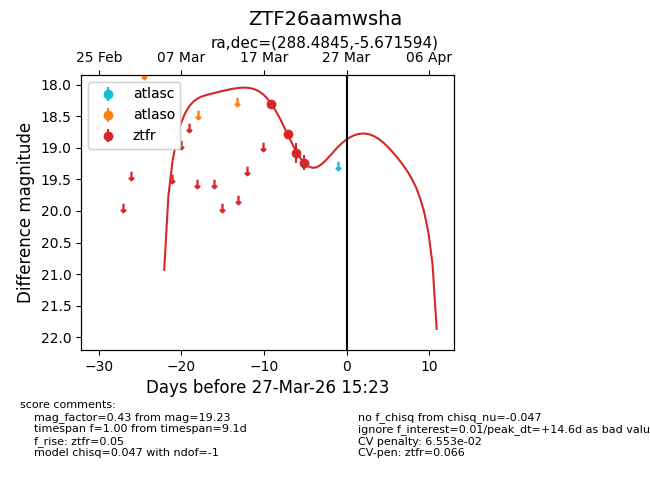
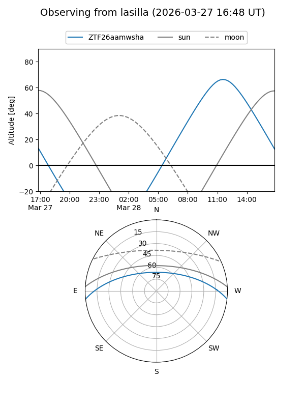
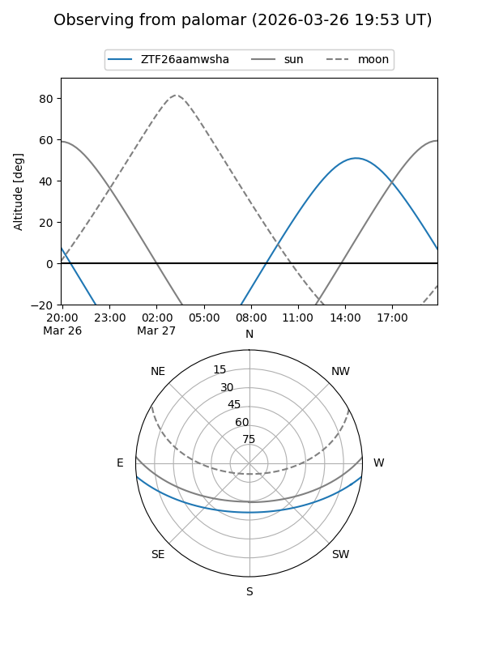
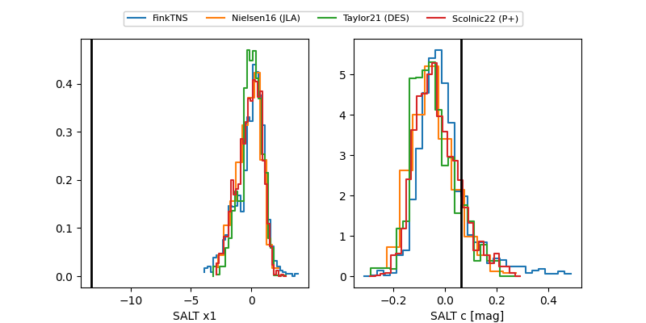

ZTF26aamwsha
Target ZTF26aamwsha at 2026-03-27 15:25
Aliases and brokers:
FINK: link
Lasair: link
ALeRCE: link
alt names
ZTF26aamwsha (ztf,fink_ztf)
Coordinates:
equatorial (ra, dec) = 288.4845,-5.67159
equatorial (HMS+DMS) = 19:13:56.27,-05:40:17.74
galactic (l, b) = (30.4180,-7.57768)
Flags:
likely cv
Photometry:
last ztfr=19.23
4 ztfr detections
Lightcurve

Visibility


Additional plots
